95_WR MS5 Camdetect
Module function
including model design, data diversity analysis, code reproduction, testing and Q&A
3D object detection
No merging multiple camera information, each camera is independent prediction
Based on the 2D detection model, add 3D attributes to return Head (FCOS3D)
Model input
-
Enter image
size:1024x768
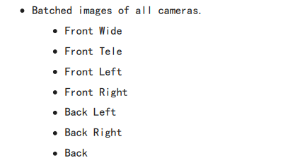
-
All camera calibration parameters
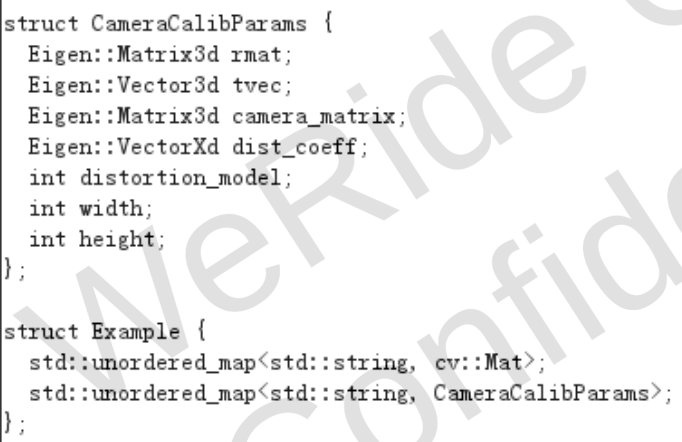
data
-
quantity
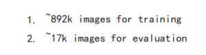
-
GT generation
|
project |
content |
Remark |
|
GT |
Two -dimensional box and 3D frame |
3D related attributes are added to the 2D detection model |
|
Method of generating |
Algorithm |
A 3D cubes per 3D Projection to two -dimensional plane , Calculate the IOU and central distance of each GT 2D box and the projection 2D box, calculate similarity scores, select The most matched projection box is used as a matching box for 3D EssenceFor those 3D projection 2D boxes that are not matched, 3D regression loss is not calculated during training. |
Model design
Monochrome 3D detection, based on common 2D detection model development, plus the added 3D attribute head.It first performs 2D target detection and then generates 3D information at the same time.
Camera parameters are only used for post -processing phase.
Network structure
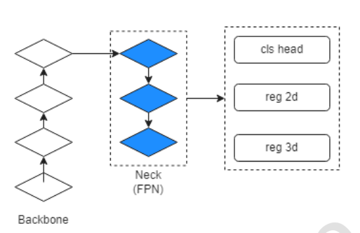
-
backbone
Use regnet (designing network design space) as BackBone, regnet blocks are similar to ResNet, Use shortcut to connect.
3X3-Conv uses the same group convolution as Resone.However, the channel width remains unchanged in the regnet block, Bottleneck Conv is different from ResNet.
Use regnetx-800mf, the structure is as follows
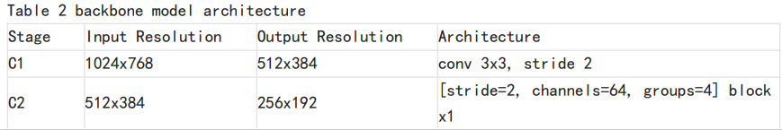
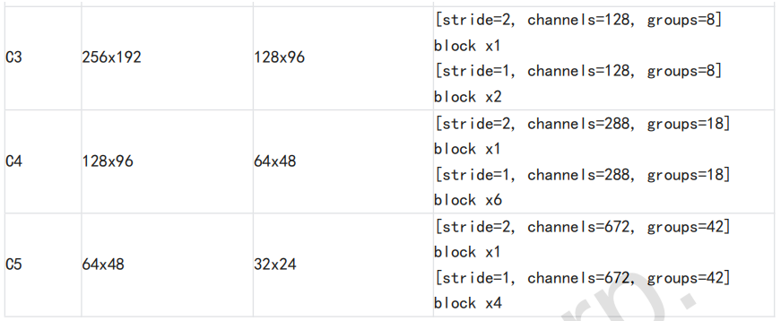
block structure
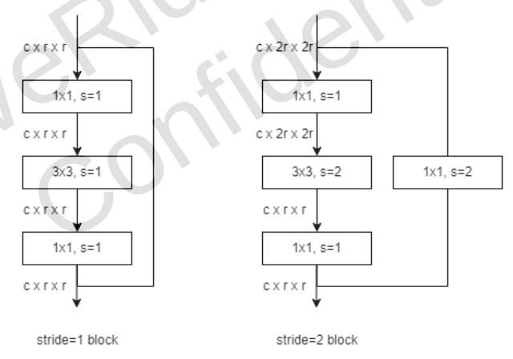
-
neck
The FPN characteristic pyramid structure has the characteristics of different resolution and semantics of different resilience and semantics of the lower body.
as the picture shows.
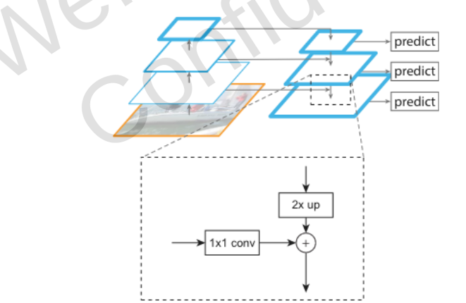
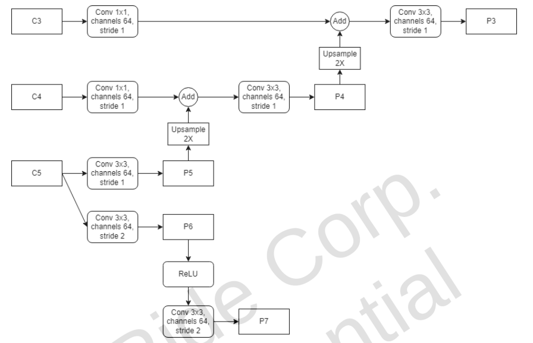
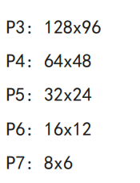
-
head
|
head |
quantity |
content |
|
Classification |
Quantity |
Each dimension represents the probability of a category |
|
2D |
4 |
ANCHOR to 2D BBOX left, right, up, down, |
|
3D |
10 |
The offset (x, y) from the 3D projection center to the two -dimensional long square body center [2], Deep [1], 3D boundary frame size (length, width, height) [3] Direction (return to partial flights respectively 4*partial flight, Use cos/sin to represent the direction) [4] You can refer to FCOS 3D: (There is no Velocity in the picture) 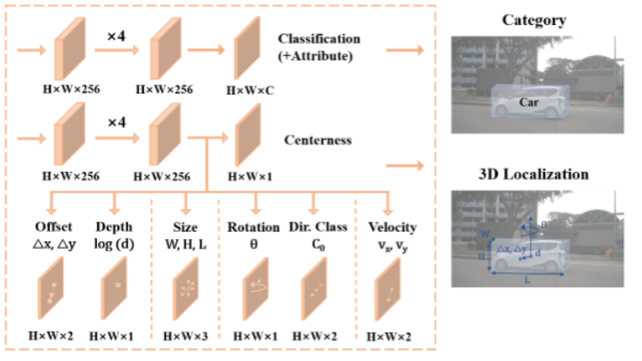 |
-
Positive and negative sample allocation
Simota strategy proposed by YOLOX.
Filter the high -quality positive and match GT BOX, thereby reducing the cost of this matching process (COST)
(1) Calculate each (GT) box and prediction box, consisting of cross -entropy and iOU scores.For each GT, choose the first K prediction with the lowest cost in the fixed center area as its positive value
(2) The remaining grid settings are set to negative samples.
-
Lost function design
-
Loss function
-
|
Task |
loss |
Remark |
|
Classification |
multi-class sigmoid focal loss |
|
|
2D |
bbox:L1 smoothed loss |
|
|
3D |
offset、radius,depth,3D Size ，orientation : L1 loss DEPTH gives more weight at long -distance targets to ensure positioning accuracy |
|
-
Loss function weight
-
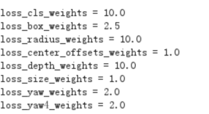
Training strategy and ultra -reasons
|
project |
content |
Remark |
|
Optimizer |
weight decay 0.0001 |
|
|
Preliminary learning rate |
0.001 |
|
|
warmup steps |
10000 |
|
|
batchsize |
16 |
|
|
Long general training step |
15 0000 |
|
|
Other strategies |
The maximum limit of gradient is 10.0 (exceeding the use of CLIP) |
|
Model output after processing
(1) All detected boxes apply IOU threshold 0.5 to perform NMS
(2) The output of the first 00 detection box for each image output to the downstream.
(3) For 3D boundary boxes, use prediction Metropolitania and depth of counter -projection , To determine the 3D position of the center of the object.Then, the camera external parameters changed their camera coordinates to the body coordinates.
Evaluation indicator
2D side BBOX is generally not used, so it mainly focuses on the evaluation of the 3D boundary box.
Due to the uncertainty of the monocular depth estimation, it is impossible to obtain a more accurate 3D accuracy.Traditional 3D AP based on Bev IOU is not suitable for 3D object detection.
The use of LET-3D-AP proposed by Waymo as a 3D detection indicator is an indicator for evaluating 3D object detection performance in the autonomous driving scenario, emphasizing the importance of positioning accuracy.
It is a comprehensive quantity of the performance performance of the object location, which helps measure the effect of the model in the 3D object detection of TASK.
LET-3D-AP：Location Estimation in Three Dimensions Average Precision
|
project |
content |
Remark |
|
3D boundary box position estimation |
Predicate the accuracy of the 3D boundary box position.Compare the distance between the predicted boundary box center and the actual boundary frame center. |
|
|
Average accuracy (AP) |
Similar to the traditional target detection AP, the Let-3D-AP calculates the accuracy of a series of different iOU thresholds and average. This helps to comprehensively consider the performance under different positioning accuracy requirements |
|
|
Location estimation weight |
The importance of objects of different sizes to 3D positioning may be different.Let-3D-AP allocate different weights for objects of different sizes to better evaluate different sizes of objects |
|
Training experiment
15epoch,150Kstep
WR：
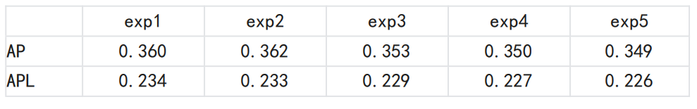
OURS:
|
|
exp1 |
exp2 |
exp3 |
|
AP |
33.746% |
|
|
|
APL |
21.9792% |
|
|
exp1-detail
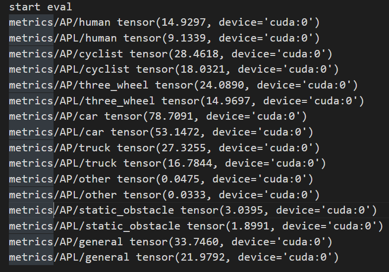
Code analysis
-
Code engineering
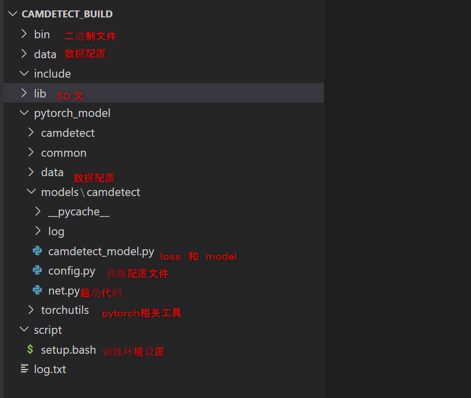
Training configuration file
Parameter configuration of Data, models, training, evaluation, and reasoning through Class
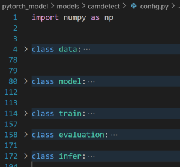
data configuration
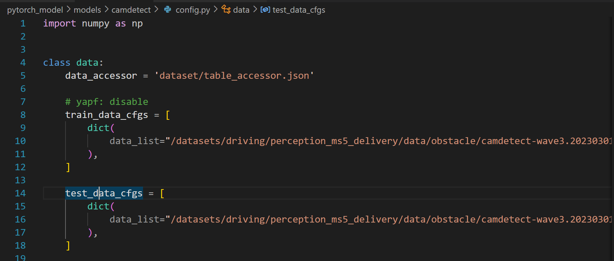
Training category
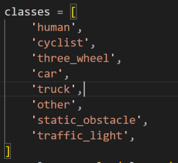
Category mapping, involving merger categories:
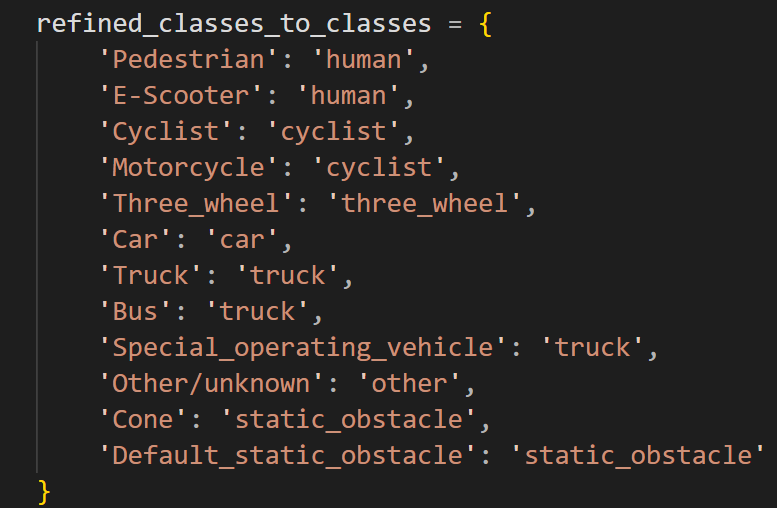
Model configuration
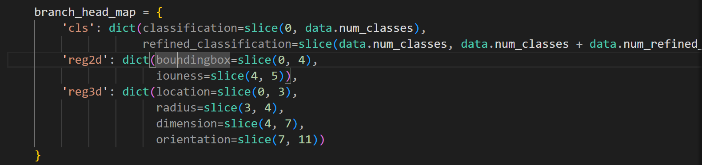
Training configuration
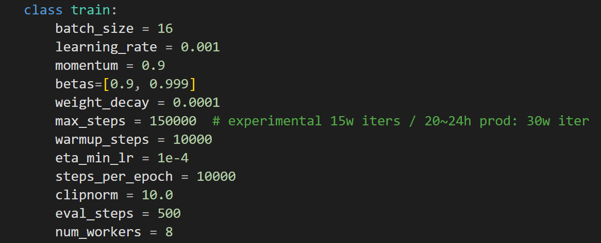
Assessment configuration
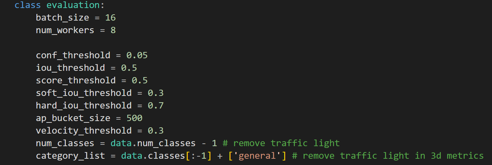
Inference configuration
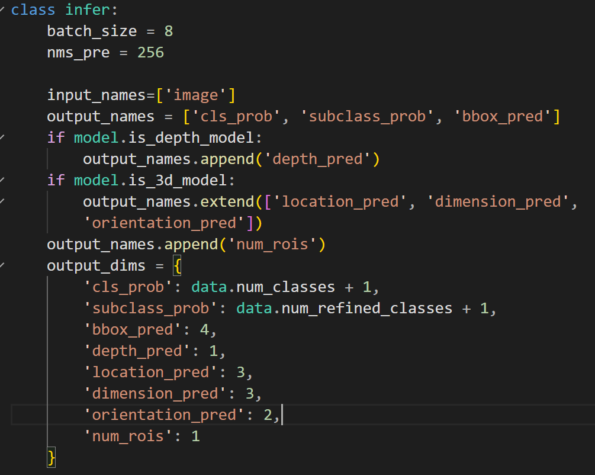
Training startup file
More conventional, training, testing and turning onNX models
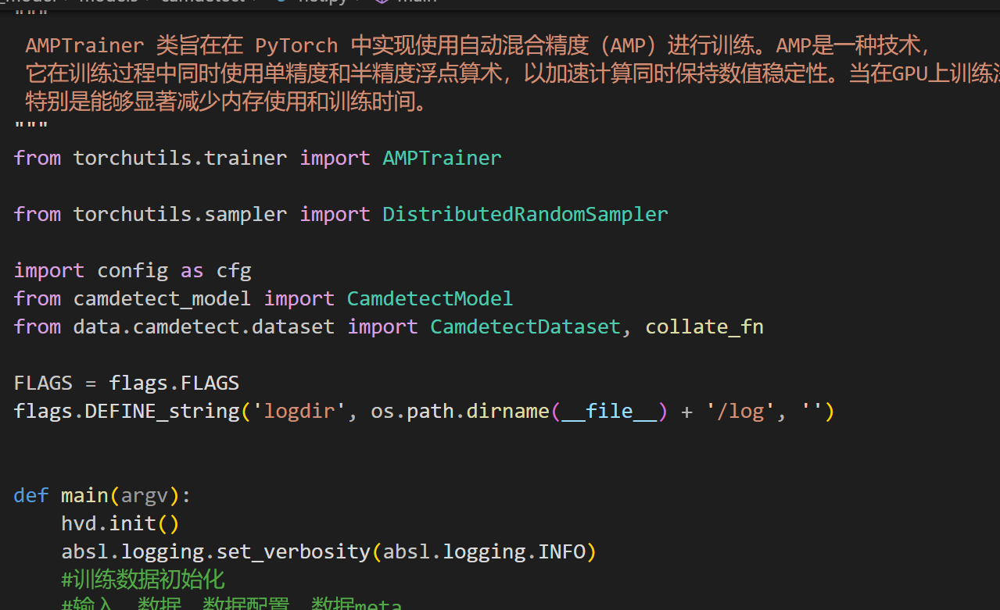
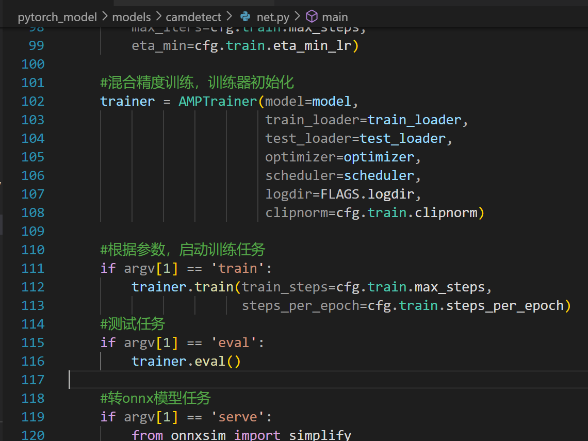
dataloder
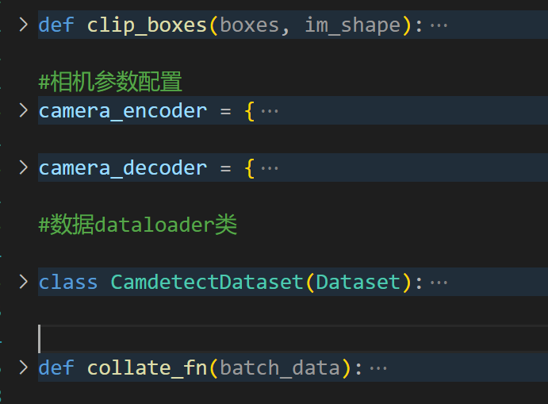
Model and Loss function
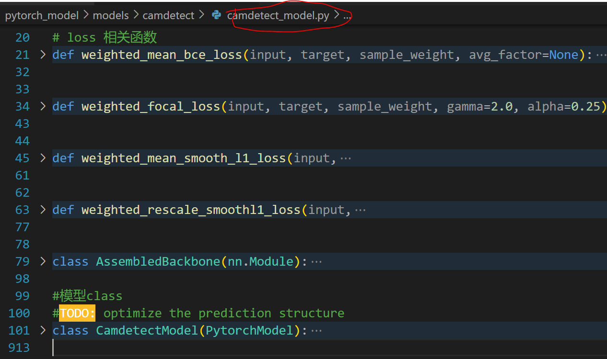
Other code
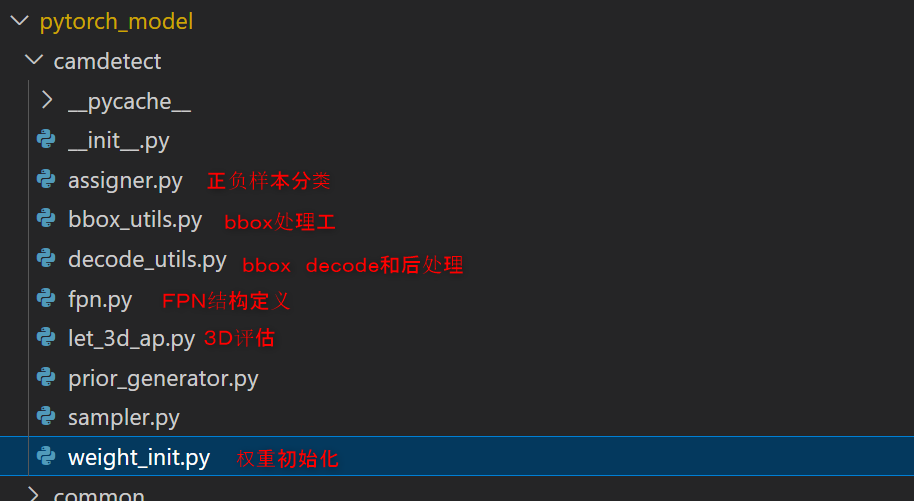